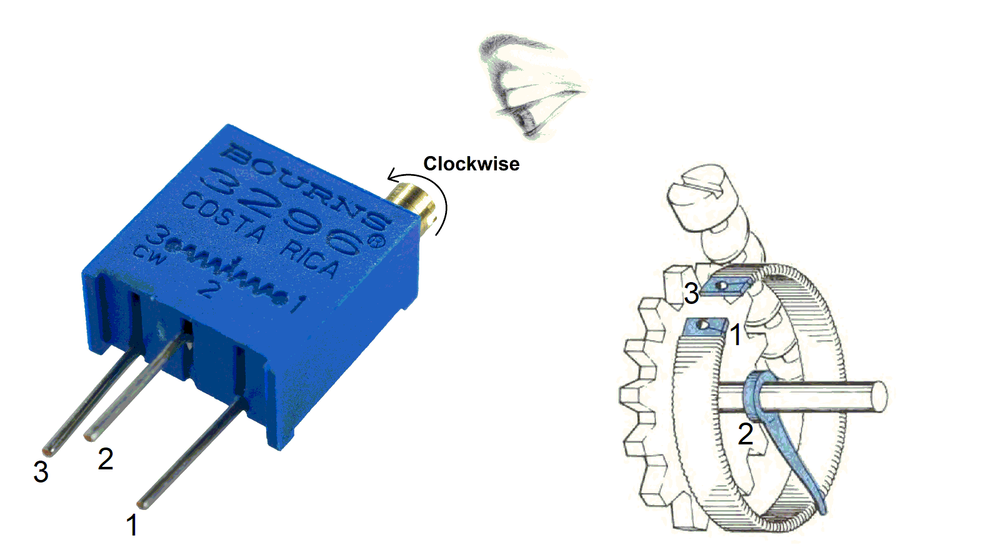
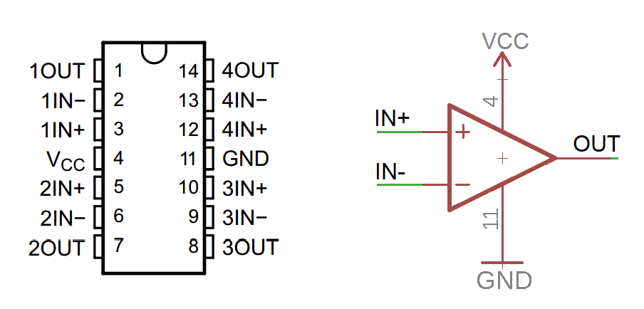
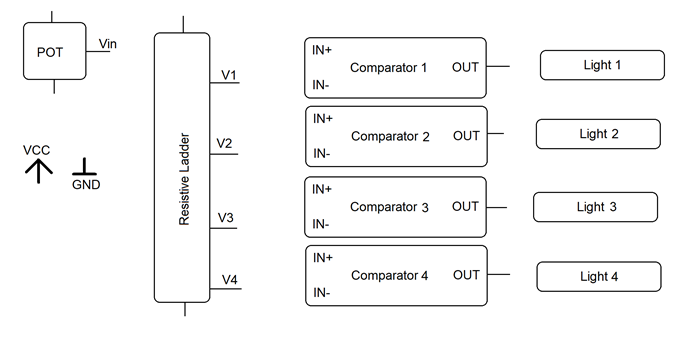
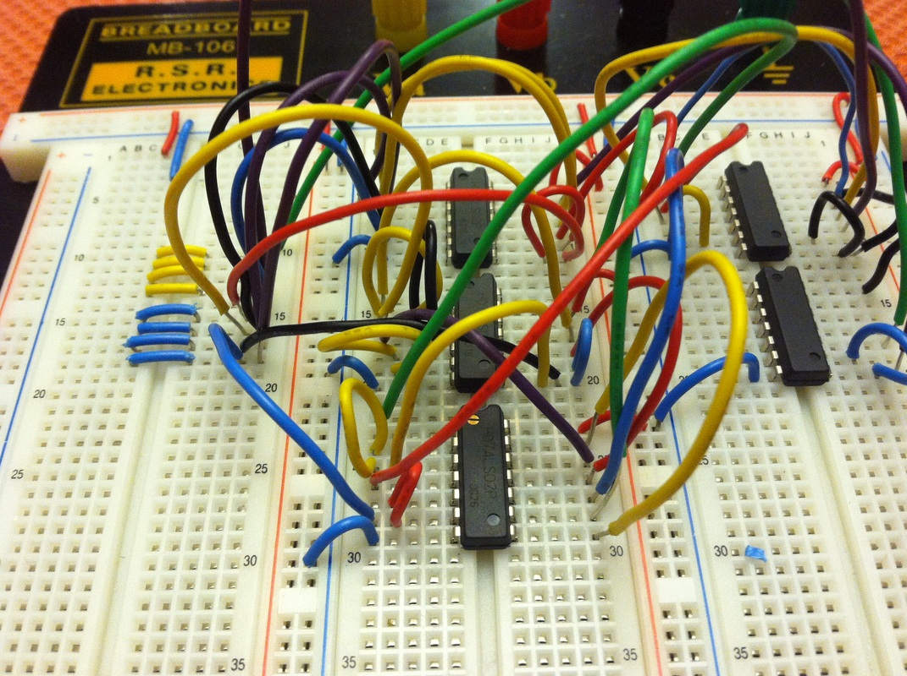

EENG 393
In Lab 1 - IntroductionRequirements
When you have worked through all the material in this lab writeup, please take the inLab 01 Quiz. You may find quiz questions to be similar to, but not identical to the numbered questions in this inLab write up. Note, you wil have 60 minutes to complete the ten questions in the Canvas quiz so it would be a good idea to complete all the inLab activities before taking the Canvas quiz. Do not turn in the answers to the numbered questions in this inLab writeup.Course Goal
The goal of this course is for you to design a printed circuit board (PCB) for a constant current, constant voltage power supply unit (PSU). I will arrange to have your PCBs manufactured. You will then solder the components to your PCB and then design and fabricate an enclosure for your power supply. At the end of this term you should be the proud owner of a nice piece of lab equipment that you can use for all sorts of projects. Please note that variation circuit is a variation of the uSupply power supply unit (PSU) first detailed by Dave Jones. I have provided links to Dave's videos on the class home page. The following image is the schematic for the complete PSU.
This schematic, when taken in all at once, can be overwhelming. In order to make the task of understanding this design, we will break the design down into smaller subsystems. The first of these will be the volume unit (VU) meter in the lower left of the schematic.
VU meter
The original volume unit meters (VU meter) were old-school cool analog devices that display the strength of a signal (audio volume) using a needle that travels across a numbered scale. An example is shown at left in the following image. Modern digital VU meters replace the needle movement with a bar of illuminated LEDs whose length increases and decreases to display the strength of the signal.
To introduce some focused language, an N-segment LED bar graph is a collection of N LEDs arranged in a column. At any given time the bottom M LEDs are illuminated and N-M upper LEDs are not illuminated. The height of the bar provides a rough visual indication of the signal level.
A simplified schematic for our VU meter is shown in the following image.

The electrical circuit for a VU meter is represented in schematic form and uses op-amp, LEDs and resistors. Before diving into the operation of the VU meter, it's well worth spending some time diving into the details of these components.
Reading a schematic
Please read through the article at this link. You should probably skip over the first part and start at the "Name Designators and Values" section.Resistors
Often we take for granted the electrical components that we pull from large trays full of similarly rated components. I can only imagine the difficulty the pioneers of our field struggled with to get circuit elements that behaved predictably. For me, no component epitomizes this better than the humble resistor. They are so accessible, that labs routinely throw-out unsorted piles of used resistors because it costs more to pay an employee to sort them then it does to buy new ones. While it may be obvious, let's look at some of the parameters that you would use when selecting a resistor.- Resistance
-
This one seems pretty obvious - the amount of impedance to the flow of
electrons. Most resistors carry some indication of their resistance
on the device. For through hole resistors, this indication comes in
the form of colored bands on the body of the resistor. The color
of each band represents a number - the resistance is determined by
putting these numbers into a predetermined format. The image below
describes the color code and format you will likely encounter when
looking through the resistors available in our labs.

You can use the following procedure to determine the resistance of a resistor from its color code.- Orientate the resistor so that the silver or gold band is to the right,
- List off the color of the bands from left to right. The resistor in the image above has green, black, red and gold bands from left to right.
- Convert the colors to their corresponding numbers using the table in the image above. The resistor in the image above has numerical value 5, 0, 2, 5% from left to right.
- The first two numbers are the tens and unit digital of the resistance (in scientific notation), the third digit is the exponent 10, and the percent is the tolerance (more on this soon). The resistor in the image above has a resistance 50*102 = 5000 = 5kΩ
- Describe the color code found on the following resistors.
Value Color bands 22Ω @10% 330Ω@10% Yellow, Purple, Red, Silver 68kΩ@5% Green, Blue, Yellow, Gold - SMT resistors use a
numbering
code for their values - hint look for the section on "SMT resistors".
Read about this code and determine the values for our resistors.
Code Resistance (in ohms) 103 4.7kΩ 911 110Ω 390 225 2R7
- Package
-
The physical package a resistor comes in often dictates the application
the resistor will be used in. Most resistors you use in your circuits
will be for low-power applications, so you will either be using
¼ through hole resistors or SMT resistors.
The nomenclature used to describe surface mount (SMT) resistors
packages is based on the width and length of the packages in
1/100th of an inch. Each of the two package dimensions
is given two digits in the description, with the length first and
the width second. So for example, a 1206 resistor has a length
of 12/100 of an inch and a width of 06/100 of an inch. The following
image shows how the measurements are taken as well as some common
SMT package sizes. Please note that we will be using Imperial units
in our class.

The image in the next section shows a variety of different packages for through-hole packages. - Power
-
The power dissipated by a resistor is turned into heat. A resistor which
is installed in an application that requires the resistor to dissipate
more power than it is rated for, will cause the resistor to overheat and
literally go up in smoke. Kind-of cool, but usually not something you
want to intentionally have happen in a piece of electronics you are
designing.
The packaging of a resistor will tell you a lot about the power that
resistor can dissipate. A general rule is that the larger a resistor
is, the more power is can dissipate. Another feature that sets off
high power resistors is a metal package that has mounting hole for
a heat sink. A variety of resistor packaging styles are shown in the
the following image.

-
For each of the resistors shown in the image above, use the Digikey
web site to determine the missing information in the table below.
In the "Package" column, use the "Package/Case" description from the
Digikey product information page. Use units of dollars in the "Unit Cost".
In the "Resistor" column, list the letter corresponding to the device in
the image above. If a package is not shown in the image above, write
"Not shown" in the "Resistor" column.
Resistor Digikey Part Number Package Power Unit Cost CF14JT1K00TR-ND B P5.1W-3TR-ND 311-330JRCT-ND TWW5J8R2E-ND YAG2919CT-ND F 311-4.7ERCT-ND L50J5R0E-ND KNP100FR-73-1R 810F5R0E-ND 311-10.0KCRDKR-ND
P = I2R = V*I = v2/R
You should use whatever equation fits the variables that you know. For example, if you want to know how much power is dissipated through a 2.2kΩ resistor that has a 10V drop across it, then it most direct answer would look like:P = 10V2/2.2kΩ = 0.045 Watts = 45mW
- You need to place a ¼ Watt resistor across 10V, what is the lowest resistor value that you can use?
-
For each of the resistors shown in the image above, use the Digikey
web site to determine the missing information in the table below.
In the "Package" column, use the "Package/Case" description from the
Digikey product information page. Use units of dollars in the "Unit Cost".
In the "Resistor" column, list the letter corresponding to the device in
the image above. If a package is not shown in the image above, write
"Not shown" in the "Resistor" column.
- Network Configuration
-
In many applications, you will need a set of same-valued resistors in your
circuit. In these applications, it makes sense to use a resistor network
or resistor array, a package that contains a number of resistors. A resistor
array, shown below right, usually come in a dual in-line (DIP) package
with electrically independent resistors placed across opposite pins of
the DIP package. A resistor network usually have some electrical connection
between the resistive elements. The resistor network shown at left in the
image below has a common pin denoted with a dot above it on the package.
Each of the remaining pins is connected to this common pin with a resistor.

Sometimes the package markings are not enough to find the part on Digikey. In these cases you may have to deduce the organization of resistors using a DMM set in resistance mode and probe around the pins for a while. The results can be confusing unless you have some expectation of the possible resistor configurations. For example, in the resistor network, shown at left in the image above, probing a pair of pins my show twice the individual resistance, if you miss the common pin.
This one seems pretty obvious - the amount of impedance to the flow of
- Mounting type
- Broadly, there are two mounting type, surface mount and through hole. The difference between these two describes the method used to attach the terminal of the capacitor to the printed circuit board (PCB). Through hole parts have leads designed to penetrate through holes placed in the PCB. These holes are usually plated with conductive material (metal) that allows the leads to be soldered in securely while making a good electrical connection to the traces connected to the plated through hole. Surface mount components have plated end caps that are laid into conductive pads coated with a gooey paste. When sufficiently heated, this paste chemically transforms into (hot) liquid solder. When subsequently cooled, the solder solidifies creating a strong mechanical and electrical connection between the device and PCB.
- Tolerance
-
Tolerance describes the maximum difference between the value of the
resistor deliver to you and the value that you expected when
you ordered the resistor as a percentage. For example, let's say that
you ordered a 5% 10kΩ resistor. You will receive a resistor with:
- minimum value = 10kΩ - 0.05*10kΩ = 9.5kΩ
- maximum value = 10kΩ + 0.05*10kΩ = 10.5kΩ
Resistors come in what are referred to as "preferred values", organized into decades. The resistor values in each decade are 10 times larger than those in the previous decade. The number of resistors in a decade is placed after the letter "E", and called a "series". For example, if there are 12 resistor values in a decade, then those values are called an E12 series set of resistors or E12 for short. E12 is the most common series, with E24, E48, up to E192 being available.
The values of the first two decades of the E12 series are given in the table below.
| 100Ω decade | 101Ω decade |
| 1.0 | 10 |
| 1.2 | 12 |
| 1.5 | 15 |
| 1.8 | 18 |
| 2.2 | 22 |
| 2.7 | 27 |
| 3.3 | 33 |
| 3.9 | 39 |
| 4.7 | 47 |
| 5.6 | 56 |
| 6.8 | 68 |
| 8.2 | 82 |
Let's say you are designing a circuit that calls for a 5kΩ resistor, but you are stuck choosing from E12 series values. Consulting the table above, the closest value to 5kΩ is 4.7kΩ. The percentage error involved in this choice is the difference of the two resistors divided by the needed value, times 100. This calculation is carried out in the first row of the following table.
- Complete the following table by selecting the closest E12 resistor
to the Needed value in the left column. Then compute the percentage
error of this selected E12 resistor and the needed value. Express the
percentage error to 1 decimal point.
Needed Value Closest E12 value Percent Error 5kΩ 4.7kΩ (0.3k/5k)*100 = 6.0% 1.1kΩ 1.35kΩ 1.65kΩ 2kΩ 2.45kΩ 3kΩ 3.6kΩ 4.3kΩ 5.15kΩ 6.2kΩ 7.5kΩ 9.1kΩ
Practical stuff…
When choosing values for resistors stay with preferred values from the lowest numbered series possible. This will simplify your bill of materials, reduce the complexity of your supply chain, simplify PCB assembly for the pick and place machines, and afford you price breaks on higher volumes. It will also make you look like a pro.
Resistive ladder
A resistive ladder is constructed from a series arrangement of N resistors spanning high voltage, Vref, and a low voltage, GND as shown in the following image. The output of a resistive ladder is a set of N-1 voltages V1, … VN-1 taken between adjacent resistors.
The value of these voltages is easy to determine using the series resistor property and voltage division. The effective resistance of a series combination of resistors is their sum. The voltage divider law states that the voltage across one resistors in a series pair A,B is A/(A+B) times the voltage across the pair.
For example, the voltage at node V2 in the image above is Vref*(R1 + R2)/ (R1 … RN). In the spacial (and common) case where all the resistors have the same resistance Vref is split evenly, each resistor dropping Vref/N volts. In other words, the voltage at Vi = Vref*i/N
- Let N = 5 and Vref = 10V, what are the voltages on the taps?
Node Voltage V1 V2 V3 V4 - Let N = 5 and Vref=10V, what is the lowest resistance value, for each of the 5 resistors, so that the power dissipated through each resistor is ¼ watt? Assume that all five resistors in the ladder have the same resistance value.
Potentiometers
Potentiometers are electromechanical structures with two terminals fixed at the ends of a resistive track and a third terminal that slides on top of the resistive tract. There are two standard uses for potentiometers, to trim a resistance value and as a user control for electronics devices. Let's open up a potentiometer so that we can better understand it's operation.The potentiometer wiper, often called the center tap, in the following image is about 1/3 of the way between terminal A and B. If the resistance of the track between A and B is 10kΩ then the resistance from A to the center tap is 10/3 kΩ. The resistance between the center tap is 10*2/3 kΩ. Obviously, the sum of the resistance between A and the center tap, plus the resistance between the center tap and B is equal to the resistance between A and B.

- In the image above, let A=11v, B = 0v, and the center tap be 1/3 the way from A to B. What is the voltage at the center tap?
- In the image above, let A=11v, B = 0v, and the resistance between A and B be 20kΩ. How much power is being dissipated in the potentiometer?
- In the image above, connect A and the center tap together with a wire. What happens to the resistance between A and B as the wiper is moved from A to B?
- Resistance
- This is pretty obvious and what you have been reading about.
- Type
-
POTs come in a diverse variety of packages and forms. The three
most common types are trimmer, rotatory and slider. All have the
same parts, they are just packaged differently. Trimmer POTs are adjusted
using a small tool and expected to be changed infrequently - perhaps
once at the factory when calibrating the device. They are not made
to handle regular changes. Rotary POTs are
installed to allow the operator of the derive the ability to
easily and frequently adjust the resistance of the POT. This
resistance might do something like control the maximum voltage
supplied by a power supply. Slide POTs are used in the same applications
as rotary POTs, but allow the control input to move back and forth along
a linear track.

- Scaling
- The POTs that you will be working with in this class are linear, meaning that moving the wiper makes a proportional change in resistance between the wiper and the other two pins. If the carbon filament is intentionally manufactured to be wider on one end, movement of the wiper will result in a disproportionate change in the resistance from the center tap to the other two terminals. The relationship between wiper and resistance is often logarithmic. Log POTs are often used in audio application where perceived volume is a logarithmic factor of sound pressure.
- Power
- Any resistive element in a circuit dissipated power according to the familiar equations. Choose a potentiometer that can dissipate more power then your application calls for. No one wants to handle a burning hot potentiometer to adjust the performance of a circuit!
- Mounting type
- Since potentiometers are often used as control inputs to circuits, they need to be placed for easy access. One way to accomplish this is to mount a potentiometer to a control panel, so-called panel mount. Control panels are usually constructed from thin sheet metal with holes cut in them to accommodate a variety of indicators and controls. The status or control surface of the electrical device faces the user, while the wiring is on the back of the panel. As a consequence most panel mount electrical devices have a threaded element that goes through the panel and is attached to the panel with a nut that tightens on the threaded element. Other mounting types are through hole (shown in the image above) and surface mount.
- Number of turns
- Sometimes you want fine control of the potentiometers position that is not available in a single rotation. A multi-turn pot requires several rotations of the control input to move the wiper from one terminal to the other. This is accomplished using a worm gear or helical resistive track.
- Number of gangs
- A ganged potentiometer has a single rotational control attached to a collection of potentiometers. The wiper of each potentiometer is moved in coordination with all the others. Otherwise each potentiometer is independent of the others with its own A,B and wiper terminals. This can make for a large number of pins on a 4 gang pot.
- Turn orientation
-
When layout out a PCB it's important to know how the resistance between
the terminals changes as the wiper is moved. Let's start by looking
at the Bourns 3386 single-turn POT shown at left in the image below.

The 3386 has three terminals, with the wiper connected to terminal 2. The wiper position of the 3386 is controlled by the position of the white plastic dial in the center of the POT. This white plastic dial has a molded slot with an arrowhead impression molded in. This arrow is duplicated on the schematic molded into the blue plastic below the white dial.
The schematic molded into the body of the POT shows a variable resistor with terminals 1 and 3, and an arrow pointing to the middle of the resistor. This arrow represents the center-tap that moves between terminals 1 and 3. Look carefully and you will see the letters "CW" molded into the right side of the POT above the "3" at the end of the resistor. The "CW" stands for clock-wise and means that as the white dial is turned clockwise the center tap moves towards terminal 3. If the "CW" was above the "1" then moving the white dial clockwise would move the suntrap towards terminal 1.
Even if you were not provided with this handy schematic, you should be able to deduce the operation of the POT from its likely internal organization shown at right in the image above. Since pins 1 and 3 are outermost on the POT, they are probably connected to the carbon film that creates the overall resistance of the POT. Since pin 2 sits between the other two pins, its most likely the rotating center-tap. All this information is put into the mechanical representation of the POT shown at right. Now as the wiper is move clockwise it gets closer to terminal 3. This is exactly what is shown in the schematic.
Mult-turn POT
Now consider the 25-turn Bourns 3296 shown at left in the image below.

The 3296 has three terminals, with the wiper connected to terminal 2. The wiper position of the 3386 is controlled by the position of brass screwhead on the top of the pot. The screwhead and the wiper are connected together with a worm gear as shown in the diagram at right. The direction of rotation of this brass screwhead (CW or CCW) is from the perspective looking down at the top of the POT, just as a user will be looking at the POT when its installed on a circuit board. When turning the brass screw a faint click sound indicates that you are at the limit of rotation for the worm gear. You won't break anything if you continue, but you're also not going to accomplish anything.-
Using the information molded into the
case of the 3296, answer the following questions.
- What terminals are connected to the ends of the carbon film?
- What terminal is connected to the center tap?
- Rotating the screwhead CCW moves the center towards which terminal?
- Assume terminal 3 is connected to 11V and terminal 1 to 0V. Will the voltage at terminal 2 increase or decrease as the screwhead is turned CW?
-
Using the information molded into the
case of the 3296, answer the following questions.
If you looking for a potentiometer for an electrical application you need to be price sensitive. Even a very basic single turn trimmer potentiometer you are going to be paying The Potentiometer Handbook by Bourns is an old-school-cool look at potentiometers. Check out pages 11 and 13 for some great diagrams of the internal organization of potentiometers.
Operational Amplifier
Operational amplifiers (op-amps) play a major role in the design of our power supply and you will find them to be one of the most commonly used active components in electronics design. The fact that there are 1000's of different op-amps, means that they have been optimized for a myriad of different electronics tasks. We will be using the Texas Instruments LM324 quad op-amp. The term "quad" means that the IC contains 4 independent op-amps. Each of the four op-amps is drawn using the following figure.
The Vcc and GND inputs provide power to the op-amp. The supply voltage can be anywhere from 4V to 18V. Each op-amp on the chip has two inputs, IN- the inverting input and IN+ the non-inverting input, and one output OUT. Each of the four op-amp on the chip is numbered [1 … 4]. The relationship between the inputs and output of an op-amp is summarized as follows:
OUT = AVD*(IN+ - IN-)
Since AVD is very large it follows that:
if (IN+ > IN-) then OUT increases towards VCC
if (IN+ < IN-) then OUT decreases towards GND
Two important points to remember about op-amps are:
- Almost no current flows into their inputs, IN+ and IN-,
- The output voltage can be no larger than Vcc and no lower than GND.
Comparator
The VU meter shown at the top of this lesson contained four op-amps, each wired as a comparator, shown at right in the image above. The analysis of a comparator is quite simple. Since when IN+ > IN-, OUT continues to increases until OUT = Vcc (there is no feedback in this circuit). Likewise when IN+ < IN-, OUT decreases until OUT = GND. This information is summarized below.
If (IN+ > IN-) then OUT = Vcc If (IN+ < IN-) then OUT = GNDThis op-amp configuration is called a comparator, because the op-amp is comparing its inputs and the output reflects which is larger.
Now, we will return to the VU meter and complete a high-level analysis.
VU meter analysis
Let's start the analysis using the schematic shown at left in the image below.-
In the Block Diagram shown below at right, connect the blocks using lines
to indicate signal connections. You can use names on wires (net names),
to make the drawing cleaner. Use the VCC and GND symbols anywhere you need
these values. The "Light" block consists of an LED and current-limiting
resistor (we'll talk more about these in a later lab).
Schematic Block Diagram  -
Using your knowledge of the blocks behavior, complete the following
behavioral description of the VU meter by filling in the underlined
areas with numbers.
If ((Vin > V4) and (Vin < VCC)) then LED(s) ______ are illuminated If ((Vin > V3) and (Vin < V4)) then LED(s) ______ are illuminated If ((Vin > V2) and (Vin < V3)) then LED(s) ______ are illuminated If ((Vin > V1) and (Vin < V2)) then LED(s) ______ are illuminated If ((Vin > GND) and (Vin < V1)) then LED(s) ______ are illuminated
Breadboards
A maximum that I've found true time and again as an engineer is that you should plan on making your mistakes as quickly and with the least cost possible. One way to design according to this maximum is to plan a few iterations of your design starting with an easily reconfigurable medium and moving towards the less flexible medium.So it is in this spirit that we will start the design of our PCB by creating a breadboard version of the circuit. Unlike most of your previous collegiate circuits, you will be working with this circuit over the course of the semester. Accordingly, you will not be permitted to create what my father would have called a "rats nest" circuit - shown in the image below at right. Instead you will spend some time and build a neat and tidy circuit like the one shown in the image below at left.

|  |
| Good | Bad |